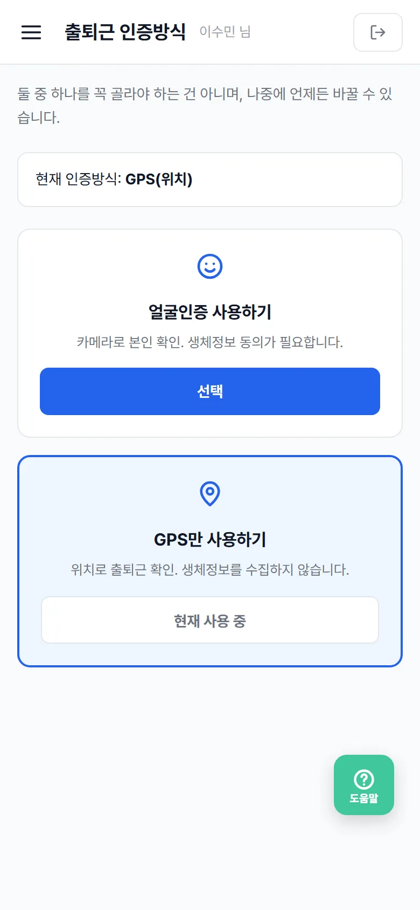
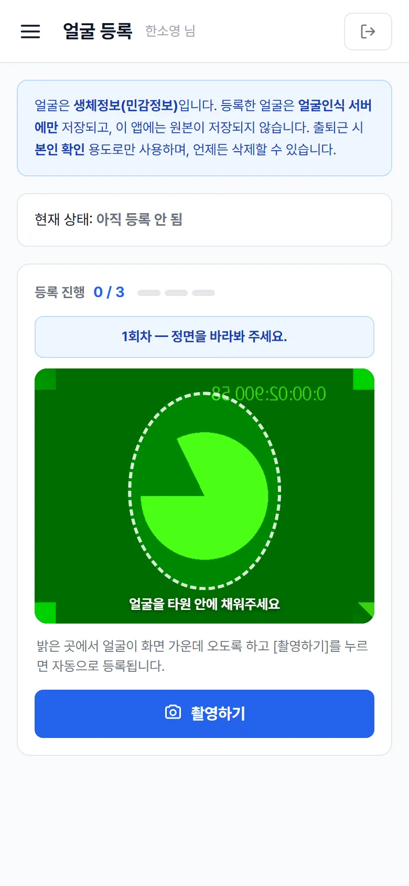
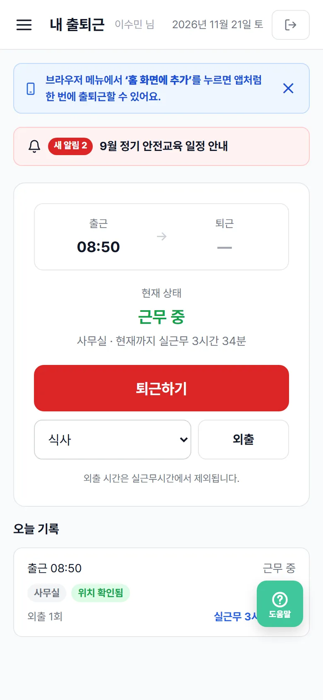
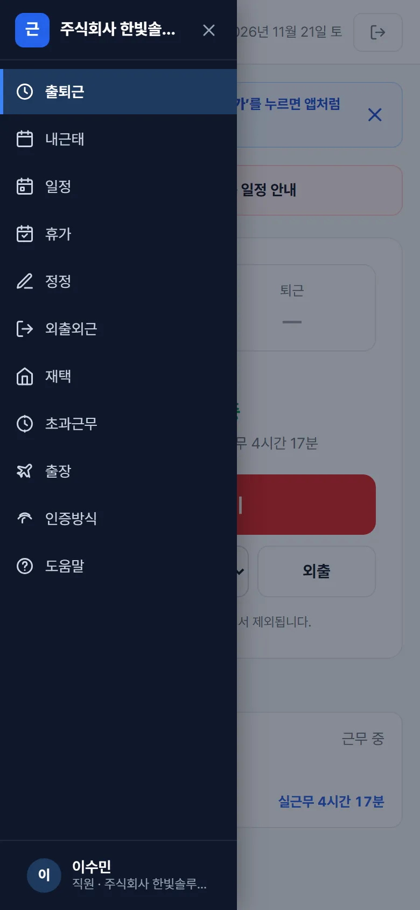
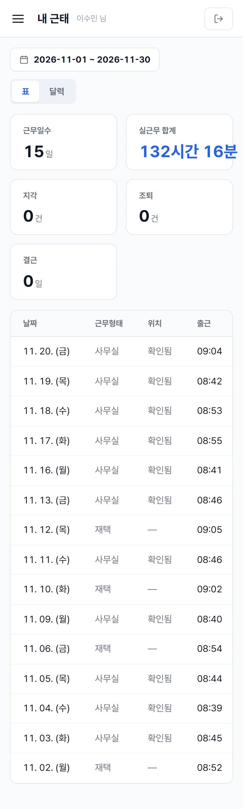
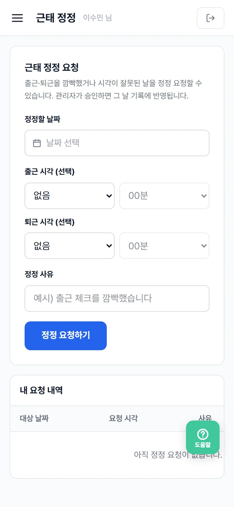
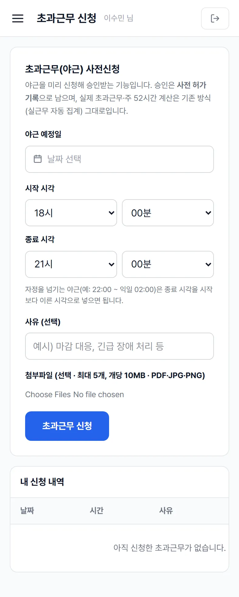

<title>직원용 출퇴근 안내</title>
<meta name="claude:viewport-fit-sides" content="cover">
<!-- 글꼴은 **PC·휴대폰에 이미 있는 것만** 쓴다(외부에서 받아오지 않는다).
     ① 인터넷이 없어도 모양이 똑같다  ② 안내서를 여는 직원 기기 정보가 바깥으로 나가지 않는다 -->
<style>
  /* 레이아웃: 한 단으로 쌓이는 짧은 안내문. 휴대폰에서 읽는 것을 기본으로 본다. */
  :root {
    --paper:   #FFFFFF;
    --ground:  #F4F6F9;
    --ink:     #111827;
    --ink-sub: #5B6472;
    --line:    #E3E7EC;
    --navy:    #0F172A;
    --brand:   #2563EB;
    --brand-soft: #EFF4FE;
    --amber:   #B45309;
    --amber-soft: #FEF6E7;
    --green:   #15803D;
    --green-soft: #ECFAF1;

    --font-display: "Pretendard", "Apple SD Gothic Neo", "맑은 고딕", "Malgun Gothic", system-ui, sans-serif;
    --font-body: "Pretendard", "Apple SD Gothic Neo", "맑은 고딕", "Malgun Gothic", system-ui, sans-serif;
  }
  @media (prefers-color-scheme: dark) {
    :root:not([data-theme="light"]) {
      --paper: #141A23; --ground: #0B0F15; --ink: #E8ECF2; --ink-sub: #9AA5B4;
      --line: #273140; --navy: #0B1220; --brand: #6AA3FF; --brand-soft: #16233A;
      --amber: #E9A23B; --amber-soft: #2A2112; --green: #4ADE80; --green-soft: #12251A;
      color-scheme: dark;
    }
  }
  :root[data-theme="dark"] {
    --paper: #141A23; --ground: #0B0F15; --ink: #E8ECF2; --ink-sub: #9AA5B4;
    --line: #273140; --navy: #0B1220; --brand: #6AA3FF; --brand-soft: #16233A;
    --amber: #E9A23B; --amber-soft: #2A2112; --green: #4ADE80; --green-soft: #12251A;
    color-scheme: dark;
  }

  * { box-sizing: border-box; }
  body {
    margin: 0; background: var(--ground); color: var(--ink);
    font-family: var(--font-body); font-size: 16.5px; line-height: 1.78;
    -webkit-text-size-adjust: 100%;
  }
  img { max-width: 100%; }

  .cover { background: var(--navy); color: #E8ECF2; }
  .in {
    max-width: 760px; margin: 0 auto;
    padding-left: max(20px, env(safe-area-inset-left, 0px));
    padding-right: max(20px, env(safe-area-inset-right, 0px));
  }
  .cover .in { padding-block: 48px 40px; }
  .logo { display: flex; align-items: center; gap: 10px; margin-bottom: 24px; }
  .logo-mark {
    width: 34px; height: 34px; border-radius: 9px; background: var(--brand);
    display: grid; place-items: center; color: #fff;
    font-family: var(--font-display); font-weight: 800; font-size: 18px;
  }
  .logo-text { font-family: var(--font-display); font-weight: 700; font-size: 17px; }
  .cover h1 {
    font-family: var(--font-display); font-weight: 800;
    font-size: clamp(27px, 6vw, 40px); line-height: 1.25; margin: 0 0 12px;
    letter-spacing: -.02em; text-wrap: balance;
  }
  .cover p { margin: 0; color: #A8B4C4; font-size: 16px; }

  main.in { padding-block: 32px 64px; }

  section + section { margin-top: 40px; }
  section { scroll-margin-top: 16px; }
  .step-head { display: flex; align-items: baseline; gap: 12px; margin-bottom: 6px; }
  .step-no {
    font-family: var(--font-display); font-weight: 800; font-size: 13px;
    color: #fff; background: var(--brand); border-radius: 999px;
    padding: 3px 11px; letter-spacing: .04em; white-space: nowrap;
  }
  h2 {
    font-family: var(--font-display); font-weight: 800;
    font-size: clamp(20px, 4.4vw, 26px); line-height: 1.33; margin: 0;
    letter-spacing: -.015em; text-wrap: balance;
  }
  .lead { margin: 6px 0 0; color: var(--ink-sub); font-size: 15.5px; }
  h3 { font-family: var(--font-display); font-weight: 700; font-size: 17px; margin: 26px 0 8px; }
  p { margin: 0 0 14px; }

  ol.steps { list-style: none; counter-reset: s; margin: 16px 0; padding: 0; display: grid; gap: 14px; }
  ol.steps > li {
    counter-increment: s;
    display: grid; grid-template-columns: 28px minmax(0, 1fr); gap: 12px; align-items: start;
  }
  ol.steps > li::before {
    content: counter(s);
    width: 28px; height: 28px; border-radius: 50%; background: var(--brand); color: #fff;
    font-family: var(--font-display); font-weight: 700; font-size: 13.5px;
    display: grid; place-items: center; font-variant-numeric: tabular-nums;
  }
  ol.steps p { margin: 0; }

  figure { margin: 20px 0; }
  .shot {
    position: relative; display: block; max-width: 330px;
    border: 1px solid var(--line); border-radius: 16px; overflow: hidden;
    background: var(--paper); line-height: 0;
  }
  .shot img { display: block; width: 100%; height: auto; }
  figcaption { margin-top: 10px; font-size: 14px; color: var(--ink-sub); line-height: 1.65; }
  figcaption b { color: var(--ink); font-weight: 600; }
  .pair { display: grid; grid-template-columns: repeat(auto-fit, minmax(230px, 1fr)); gap: 20px; align-items: start; }
  .pair figure { margin: 0; }

  .pin {
    position: absolute; left: var(--x); top: var(--y); transform: translate(-50%, -50%);
    width: 26px; height: 26px; border-radius: 50%; background: #DC2626; color: #fff;
    font-family: var(--font-display); font-weight: 700; font-size: 13px;
    display: grid; place-items: center; line-height: 1;
    box-shadow: 0 0 0 3px rgba(255,255,255,.92), 0 2px 6px rgba(0,0,0,.3);
  }
  ol.pins { list-style: none; counter-reset: p; margin: 12px 0 0; padding: 0; display: grid; gap: 7px; }
  ol.pins > li {
    counter-increment: p;
    position: relative; padding-left: 31px;
    font-size: 14.5px; line-height: 1.6; color: var(--ink-sub);
  }
  ol.pins > li::before {
    content: counter(p);
    position: absolute; left: 0; top: 3px;
    width: 22px; height: 22px; border-radius: 50%; background: #DC2626; color: #fff;
    font-family: var(--font-display); font-weight: 700; font-size: 12px;
    display: grid; place-items: center; line-height: 1;
  }
  ol.pins b { color: var(--ink); font-weight: 600; }

  .note {
    border-radius: 12px; padding: 14px 16px; margin: 18px 0;
    font-size: 15px; line-height: 1.7; background: var(--paper); border: 1px solid var(--line);
  }
  .note p { margin: 0 0 8px; }
  .note p:last-child { margin: 0; }
  .note .tag {
    display: inline-block; font-family: var(--font-display); font-weight: 700;
    font-size: 11.5px; letter-spacing: .1em; margin-bottom: 6px;
  }
  .note.tip { background: var(--brand-soft); border-color: transparent; }
  .note.tip .tag { color: var(--brand); }
  .note.warn { background: var(--amber-soft); border-color: transparent; }
  .note.warn .tag { color: var(--amber); }
  .note.ok { background: var(--green-soft); border-color: transparent; }
  .note.ok .tag { color: var(--green); }

  kbd {
    font-family: var(--font-display); font-weight: 700; font-size: .92em;
    background: var(--brand-soft); color: var(--brand);
    padding: 1px 7px; border-radius: 5px; white-space: nowrap;
  }
  .qa { background: var(--paper); border: 1px solid var(--line); border-radius: 12px; margin-bottom: 10px; }
  .qa > summary {
    cursor: pointer; padding: 13px 16px; list-style: none;
    font-family: var(--font-display); font-weight: 700; font-size: 15.5px;
    display: flex; gap: 10px; align-items: baseline;
  }
  .qa > summary::-webkit-details-marker { display: none; }
  .qa > summary::before { content: "Q"; color: var(--brand); font-size: 13px; }
  .qa[open] > summary { border-bottom: 1px solid var(--line); }
  .qa-body { padding: 13px 16px 2px; }
  .qa-body p { font-size: 15px; }
  .foot { border-top: 1px solid var(--line); margin-top: 48px; padding-top: 20px; font-size: 14px; color: var(--ink-sub); }
  html { scroll-behavior: smooth; }
  @media (prefers-reduced-motion: reduce) { html { scroll-behavior: auto; } }
</style>

<header class="cover">
  <div class="in">
    <div class="logo">
      <span class="logo-mark">근</span>
      <span class="logo-text">근태관리</span>
    </div>
    <h1>휴대폰으로<br>출퇴근하는 방법</h1>
    <p>설치할 앱은 없습니다. 아래 순서대로 한 번만 해 두면, 다음부터는 버튼 하나만 누르면 됩니다.</p>
  </div>
</header>

<main class="in">

  <section>
    <div class="step-head"><span class="step-no">STEP 1</span></div>
    <h2>초대 링크로 가입하기</h2>
    <p class="lead">회사에서 카톡이나 문자로 보내 준 링크를 휴대폰에서 누르세요.</p>

    <figure>
      <span class="shot"></span>
      <figcaption>회사 이름이 보이는 가입 화면이 열립니다.</figcaption>
    </figure>

    <ol class="steps">
      <li><p><b>이름 · 이메일 · 비밀번호</b>를 적습니다. 비밀번호는 10자 이상, <b>본인만 아는 것</b>으로 정하세요.</p></li>
      <li><p>전화번호·사번·입사일은 <b>비워 두셔도 됩니다.</b></p></li>
      <li><p><kbd>가입하고 시작하기</kbd>를 누르면 끝입니다.</p></li>
    </ol>

    <div class="note warn">
      <span class="tag">서두르세요</span>
      <p>초대 링크는 <b>7일 동안, 한 번만</b> 쓸 수 있습니다. 기간이 지나 "사용할 수 없는 초대"라고 나오면 회사 담당자에게 새 링크를 요청하세요.</p>
    </div>
  </section>

  <section>
    <div class="step-head"><span class="step-no">STEP 2</span></div>
    <h2>출퇴근 방법 고르기</h2>
    <p class="lead">메뉴에서 <b>[인증방식]</b>을 누르면 나옵니다. 둘 중 하나를 고르시면 됩니다.</p>

    <figure>
      <span class="shot"></span>
      <figcaption>나중에 언제든지 바꿀 수 있습니다.</figcaption>
    </figure>

    <div class="note ok">
      <span class="tag">선택입니다</span>
      <p><b>얼굴인증을 꼭 쓰지 않아도 됩니다.</b> <b>[GPS만 사용하기]</b>를 고르면 위치만으로 출퇴근하고, 얼굴 사진은 한 장도 찍히지 않습니다. 회사가 강제할 수 없습니다.</p>
    </div>
  </section>

  <section>
    <div class="step-head"><span class="step-no">STEP 3</span></div>
    <h2>얼굴 등록하기</h2>
    <p class="lead">얼굴인증을 고른 분만 하시면 됩니다. GPS를 고르셨다면 이 단계는 건너뛰세요.</p>

    <div class="pair">
      <figure>
        <span class="shot"></span>
        <figcaption>먼저 <b>생체정보 이용 동의</b> 화면이 나옵니다. 내용을 읽고 동의하시면 다음으로 넘어갑니다.</figcaption>
      </figure>
      <figure>
        <span class="shot"></span>
        <figcaption><b>밝은 곳에서</b> 얼굴을 점선 타원 안에 맞추고 <kbd>촬영하기</kbd>를 <b>3번</b> 누릅니다. (초록색 부분에는 실제로는 본인 얼굴이 보입니다)</figcaption>
      </figure>
    </div>

    <figure>
      <span class="shot"></span>
      <figcaption>등록을 마치면 버튼이 <b>[얼굴로 출근하기] · [얼굴로 퇴근하기]</b>로 바뀝니다. 누르면 카메라가 열리고, 얼굴이 확인되면 기록됩니다. 어둡거나 마스크를 썼을 때는 바로 아래 <b>[얼굴 없이 일반 방식으로]</b>를 누르면 됩니다 — 출퇴근이 막히는 일은 없습니다.</figcaption>
    </figure>

    <div class="note tip">
      <span class="tag">알아두세요</span>
      <p>등록한 얼굴은 <b>본인 확인에만</b> 쓰입니다. 마음이 바뀌면 같은 화면에서 <b>[등록한 얼굴 삭제]</b>로 언제든 지울 수 있고, 그 뒤에는 GPS로 출퇴근하시면 됩니다.</p>
    </div>
  </section>

  <section>
    <div class="step-head"><span class="step-no">STEP 4</span></div>
    <h2>매일 출근·퇴근 누르기</h2>
    <p class="lead">실제로 매일 하실 일은 이것 하나뿐입니다.</p>

    <figure>
      <span class="shot">
        
        <span class="pin" style="--x: 6%; --y: 34%;">1</span>
        <span class="pin" style="--x: 6%; --y: 45%;">2</span>
        <span class="pin" style="--x: 6%; --y: 55.5%;">3</span>
        <span class="pin" style="--x: 93%; --y: 63%;">4</span>
        <span class="pin" style="--x: 6%; --y: 84%;">5</span>
      </span>
      <ol class="pins">
        <li><b>오늘의 출근·퇴근 시각</b>입니다.</li>
        <li><b>지금 상태</b>와 여기까지 일한 <b>실근무시간</b>이 보입니다.</li>
        <li><b>큰 버튼을 한 번 누르면 됩니다.</b> 출근 전에는 「출근하기」, 근무 중에는 「퇴근하기」로 바뀝니다.</li>
        <li><b>잠깐 나갈 때는 [외출]</b>을 누르고 사유를 고릅니다. 돌아와서 「복귀」를 누르면 그 시간은 근무시간에서 빠집니다.</li>
        <li><b>오늘 기록</b>입니다. 사무실에서 찍었는지 밖에서 찍었는지 표시됩니다.</li>
      </ol>
    </figure>

    <div class="note warn">
      <span class="tag">처음 한 번</span>
      <p>출근을 처음 누를 때 휴대폰이 <b>"위치를 사용하도록 허용하시겠습니까?"</b>라고 묻습니다. 반드시 <b>허용</b>을 눌러 주세요. 거부하면 출근이 기록되지 않습니다.</p>
    </div>

    <div class="note tip">
      <span class="tag">편하게 쓰는 법</span>
      <p>브라우저 메뉴에서 <b>[홈 화면에 추가]</b>를 누르면 바탕화면에 아이콘이 생겨, 앱처럼 한 번에 열립니다. 화면 위쪽에 이 안내가 자동으로 뜹니다.</p>
    </div>
  </section>

  <section>
    <div class="step-head"><span class="step-no">STEP 5</span></div>
    <h2>내 기록 보기 · 휴가 신청하기</h2>
    <p class="lead">왼쪽 위 <b>줄 세 개(☰)</b>를 누르면 메뉴가 열립니다.</p>

    <figure>
      <span class="shot"></span>
      <figcaption>여기서 쓰실 메뉴를 고릅니다.</figcaption>
    </figure>

    <div class="pair">
      <figure>
        <span class="shot"></span>
        <figcaption><b>[내근태]</b> — 내가 언제 출근하고 퇴근했는지 날짜별로 봅니다.</figcaption>
      </figure>
      <figure>
        <span class="shot"></span>
        <figcaption><b>[휴가]</b> — 연차·반차를 신청하고 남은 연차를 봅니다.</figcaption>
      </figure>
      <figure>
        <span class="shot"></span>
        <figcaption><b>[정정]</b> — 퇴근 누르는 걸 잊었을 때 바로잡아 달라고 신청합니다.</figcaption>
      </figure>
      <figure>
        <span class="shot"></span>
        <figcaption><b>[외출외근]</b> — 미리 알리는 외근 신청입니다.</figcaption>
      </figure>
      <figure>
        <span class="shot"></span>
        <figcaption><b>[초과근무]</b> — 야근을 미리 신청합니다. <b>[재택]</b>·<b>[출장]</b>도 같은 방식입니다.</figcaption>
      </figure>
    </div>
  </section>

  <section>
    <h2>이럴 땐 이렇게</h2>

    <details class="qa">
      <summary>「출근하기」를 눌렀는데 안 됩니다.</summary>
      <div class="qa-body">
        <p>거의 <b>위치 권한</b> 문제입니다. 휴대폰 설정에서 쓰고 계신 브라우저(크롬·사파리)의 <b>위치 권한을 허용</b>으로 바꾸고 화면을 새로고침해 주세요.</p>
      </div>
    </details>

    <details class="qa">
      <summary>퇴근 누르는 걸 잊고 집에 왔습니다.</summary>
      <div class="qa-body">
        <p>메뉴 <b>[정정]</b>에서 그날 <b>퇴근 시각을 적어 신청</b>하세요. 관리자가 승인하면 기록이 바로잡힙니다. 다음 날 출근·퇴근은 평소대로 하시면 됩니다.</p>
      </div>
    </details>

    <details class="qa">
      <summary>사무실 밖에서 출근을 눌러도 되나요?</summary>
      <div class="qa-body">
        <p>됩니다. 막히지 않고 <b>「외근」으로 기록</b>될 뿐입니다. 외부에서 바로 업무를 시작하는 날은 그대로 누르시면 됩니다.</p>
      </div>
    </details>

    <details class="qa">
      <summary>비밀번호를 잊었습니다.</summary>
      <div class="qa-body">
        <p>로그인 화면의 <b>[비밀번호를 잊으셨나요?]</b>를 누르세요. 비밀번호는 회사 관리자도 볼 수 없게 되어 있어, 새로 정하는 방법뿐입니다.</p>
      </div>
    </details>

    <details class="qa">
      <summary>내 얼굴 사진은 어디에 저장되나요?</summary>
      <div class="qa-body">
        <p>얼굴은 <b>생체정보(민감정보)</b>로 분류되어 법이 특별히 보호합니다. 본인 확인 용도로만 쓰이고, 동의 없이는 등록되지 않으며, 언제든 <b>본인이 직접 삭제</b>할 수 있습니다. 쓰고 싶지 않으시면 처음부터 GPS만 고르시면 됩니다.</p>
      </div>
    </details>

    <div class="foot">
      <p>이 안내서의 그림은 실제 화면이지만, 들어 있는 회사명과 이름은 설명을 위한 <b>가상의 예시</b>입니다.<br>
      더 궁금한 점은 회사 담당자에게 문의해 주세요.</p>
    </div>
  </section>

</main>
